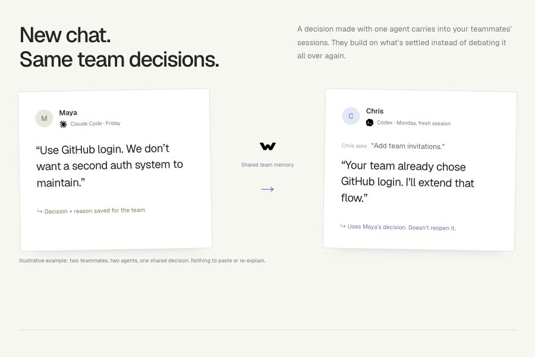

Project 01Machine learning

A macOS app and CLI that gives coding agents shared memory: the plan, the decisions and the reasons for them. A decision taken in one of your Claude Code sessions is already loaded in the one that opens Cursor or Codex.



 TypeScript
TypeScript Node.js
Node.js MCP
MCP Git
Git Cloudflare Workers
Cloudflare WorkersProject 04Developer tools
Keep the writes curated: a decision and its reason rather than every thought the agent had. What keeps the memory worth loading into every session is that it does not build what git already does well. Its history and consistency meant no vendor database holds the team's decisions.
Project 01Machine learning
Project 02Mobile


Project 03Graphics